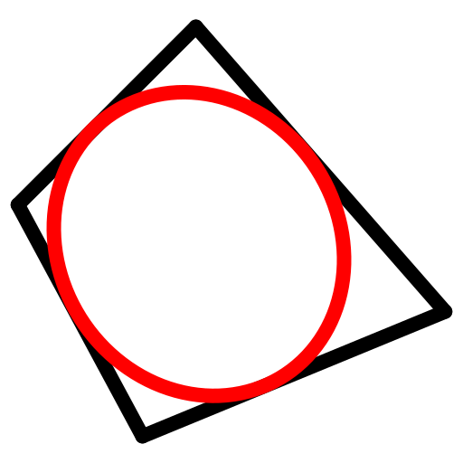
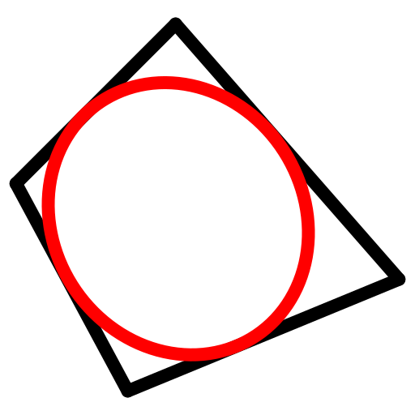
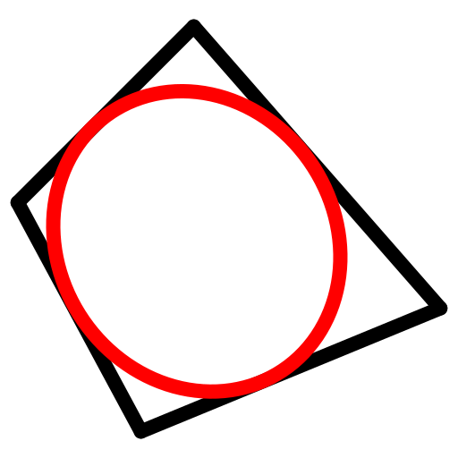

Menü: Zeichnen - Ellipse - Eingeschrieben in Viereck
Tastenkürzel: E, Q
Kommandos: ellipseinscribedquad | eq

Beschreibung:
Zeichnet eine in ein Viereck eingeschriebene Ellipse. Das heisst, eine Ellipse, die tangential zu vier Linien (Viereck) verläuft.
Vorgehensweise: